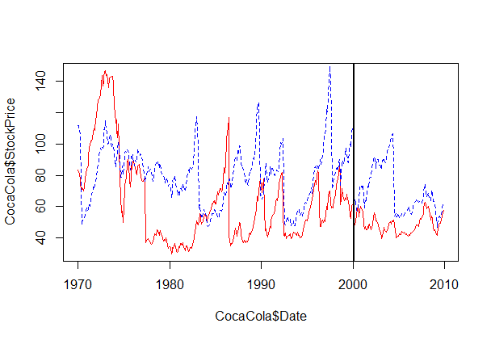
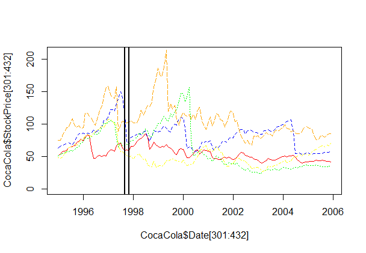

STOCK DYNAMICS
A stock market is where buyers and sellers trade shares of a company, and is one of the most popular ways for individuals and companies to invest money. The size of the world stock market is now estimated to be in the trillions. The largest stock market in the world is the New York Stock Exchange (NYSE), located in New York City. About 2,800 companies are listed on the NSYE. Today, we'll look at the monthly stock prices of five of these companies: IBM, General Electric (GE), Procter and Gamble, Coca Cola, and Boeing. The data used in this problem comes from Infochimps.
Download and read the following files into R, using the read.csv function: IBMStock.csv, GEStock.csv, ProcterGambleStock.csv, CocaColaStock.csv, and BoeingStock.csv.
We will call the data frames "IBM", "GE", "ProcterGamble", "CocaCola", and "Boeing", respectively. Each data frame has two variables, described as follows:
- Date: the date of the stock price, always given as the first of the month.
- StockPrice: the average stock price of the company in the given month.
We'll take a look at how the stock dynamics of these companies have changed over time.
First we read the data from the csv files. IBM = read.csv("IBMStock.csv") GE = read.csv("GEStock.csv") CocaCola = read.csv("CocaColaStock.csv") ProcterGamble = read.csv("ProcterGambleStock.csv") Boeing = read.csv("BoeingStock.csv")
Before working with these data sets, we need to convert the dates into a format that R can understand. Take a look at the structure of one of the datasets using the str function. Right now, the date variable is stored as a factor. We can convert this to a "Date" object in R by using the following five commands (one for each data set):
IBM$Date = as.Date(IBM$Date, "%m/%d/%y")
GE$Date = as.Date(GE$Date, "%m/%d/%y")
CocaCola$Date = as.Date(CocaCola$Date, "%m/%d/%y")
ProcterGamble$Date = as.Date(ProcterGamble$Date, "%m/%d/%y")
Boeing$Date = as.Date(Boeing$Date, "%m/%d/%y")
Using the str function, we can see that each data set has 480 observations. We have monthly data for 40 years, so there are 12*40 = 480 observations.
Using the summary function, the minimum value of the Date variable is January 1, 1970 for any dataset and the maximum value of the Date variable is December 1, 2009 for any dataset.
We can also find the minimum, maximum, mean and median prices of the different stocks.
summary(IBM$StockPrice)
summary(GE$StockPrice)
summary(CocaCola$StockPrice)
summary(Boeing$StockPrice)
summary(ProcterGamble$StockPrice)
For finding the standard deviation we can use:
sd(ProcterGamble$StockPrice)
Visualizing Stock Dynamics
Let's plot the stock prices to see if we can visualize trends in stock prices during this time period. Using the plot function, we will plot the Date on the x-axis and the StockPrice on the y-axis, for Coca-Cola. Now, let's add the line for Procter & Gamble too. We can add a line to a plot in R by using the lines function instead of the plot function. Keeping the plot for Coca-Cola open.
plot(CocaCola$Date,CocaCola$StockPrice,type='l',col="red")
lines(ProcterGamble$Date,ProcterGamble$StockPrice,col="blue",lty=2)
abline(v=as.Date(c("2000-03-01")), lwd=2)

Looking at the plot, the maximum value of the StockPrice is around 1973, and the minimum value of the StockPrice is around 1980. In March of 2000, the technology bubble burst, and a stock market crash occurred. Looking at the plot, around 2000 both stocks drop, but Procter and Gamble's stock drops more.
We can see that around 1983 the stock for Coca-Cola has an upward trend.
Visualizing Stock Dynamics 1995-2005
Let's take a look at how the stock prices changed from 1995-2005 for all five companies. In our R console, start by typing the following plot command:
plot(CocaCola$Date[301:432], CocaCola$StockPrice[301:432], type="l", col="red", ylim=c(0,210))
This will plot the CocaCola stock prices from 1995 through 2005, which are the observations numbered from 301 to 432. The additional argument, ylim=c(0,210), makes the y-axis range from 0 to 210. This will allow us to see all of the stock values when we add in the other companies.
Now, we use the lines function to add in the other four companies, remembering to only plot the observations from 1995 to 2005, or [301:432]. We don't need the "type" or "ylim" arguments for the lines function, but remember to make each company a different color so that you can tell them apart. Some color options are "red", "blue", "green", "purple", "orange", and "black". To see all of the color options in R, type colors() in your R console.
plot(CocaCola$Date[301:432], CocaCola$StockPrice[301:432], type="l", col="red", ylim=c(0,210))
lines(ProcterGamble$Date[301:432],ProcterGamble$StockPrice[301:432],col="blue",lty=2)
lines(GE$Date[301:432],GE$StockPrice[301:432],col="green",lty=3)
lines(Boeing$Date[301:432],Boeing$StockPrice[301:432],col="yellow",lty=4)
lines(IBM$Date[301:432],IBM$StockPrice[301:432],col="orange",lty=5)
abline(v=as.Date(c("1997-09-01")), lwd=2)
abline(v=as.Date(c("1997-11-01")), lwd=2)

By looking at this plot, you can see that the stock for General Electric falls significantly more than the other stocks after the technology bubble burst.
In 1995-2002, we can see that IBM has the highest value, around 1999.
In October of 1997, there was a global stock market crash that was caused by an economic crisis in Asia. Looking at the plot, two companies had a decreasing trend in stock prices from September 1997 to November 1997: Boeing and Procter & Gamble.
We can also see that Boeing is steadily increasing from 2004 to the beginning of 2006.
Monthly Trends
Lastly, let's see if stocks tend to be higher or lower during certain months. The overall average stock price for IBM is 144.375, which can be computed using the command:
mean(IBM$StockPrice)
Comparing the monthly averages to this, using the command
tapply(IBM$StockPrice, months(IBM$Date), mean),
we can see that the price has historically been higher than average during January - May, and lower than average during the remaining months. We can see the monthly average stock prices for GE and Coca-Cola by using the commands:
tapply(GE$StockPrice, months(GE$Date), mean)
tapply(CocaCola$StockPrice, months(CocaCola$Date), mean)
General Electric has an average stock price of 64.48 in April, which is higher than any other month. Coca-Cola has an average stock price of 62.69 in April, which is higher than any other month.
IBM has an average price of 140.76 in December, and 150.24 in January, which can be seen with the command:
tapply(IBM$StockPrice, months(IBM$Date), mean)
Having lower stock prices in December is a trend that holds for all five companies.
After seeing these trends, we are ready to buy stock in certain months and sell it in others! But, we should be careful, because one really good or really bad year could skew the average to show a trend that is not really there in general.